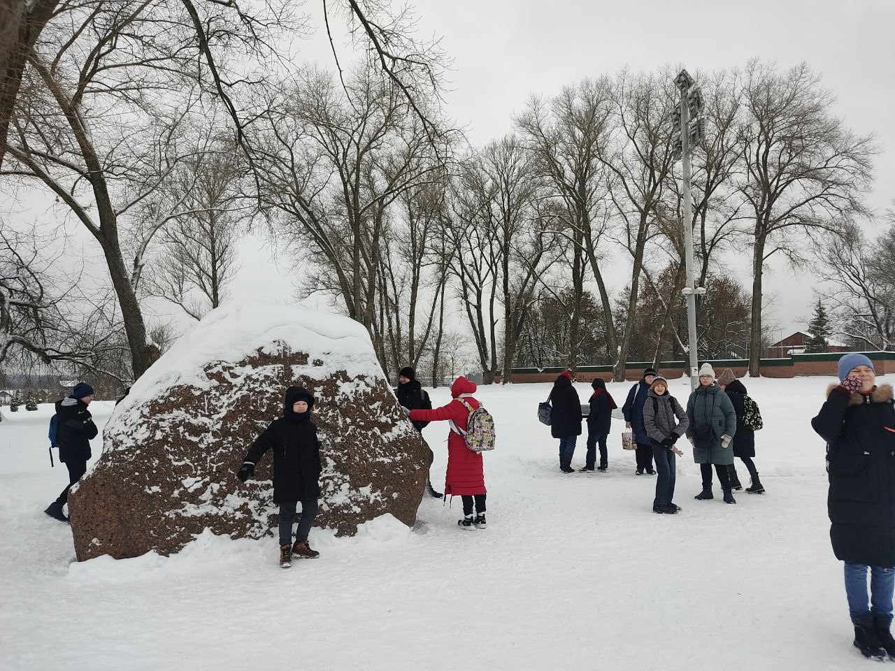

Софийский собор
Софийский собор в Полоцке стал первым каменным храмом на территории Беларуси. Его возведение началось в 1044 году и продолжалось более двух десятилетий: в строительстве принимали участие местные жители и приглашённые европейские мастера. Призванный стать символом независимости и воплощением силы Полоцкого княжества, Софийский собор создавался по образцу Константинопольского храма, отличаясь лишь меньшими размерами. По воле Всеслава Изяславича, князя полоцкого, желавшего подчеркнуть важность христианства в государстве, храму отвели почётное место — на берегу Западной Двины, в составе замкового комплекса.
Борисовы камни — уникальные памятники XII века в Беларуси
Борисовы камни — это редкие и удивительные памятники, дошедшие до нас с глубин Средневековья. Эти огромные валуны с выбитыми крестами и надписями разбросаны по территории Беларуси и связаны с именем полоцкого князя Бориса, правившего в XII веке.
На большинстве камней можно увидеть надпись: «Вспоможи, Господи, раба своего Бориса, сына Гинвилового...» — молитвенное обращение, высеченное в камне. Эти надписи служат не только религиозным символом, но и историческим свидетельством о жизни, вере и культуре древнего Полоцка.
Когда-то Борисовых камней было больше, но до наших дней сохранилось всего четыре. Один из них находится в самом Полоцке, где князь Борис сыграл важную роль в развитии государства и укреплении христианства.
Эти камни считаются настоящими реликвиями, объединяющими элементы дохристианских верований, христианской символики и княжеской власти. Они представляют собой редкое явление, сочетающее археологическую, историческую и духовную ценность.
Пройди тест для закрепления результата.
Тест